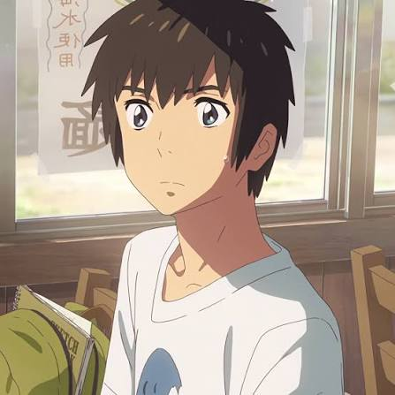
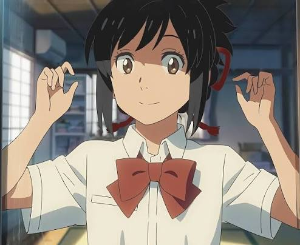
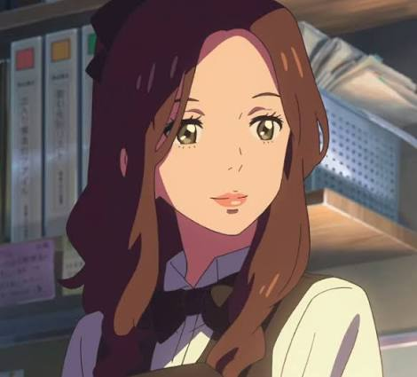
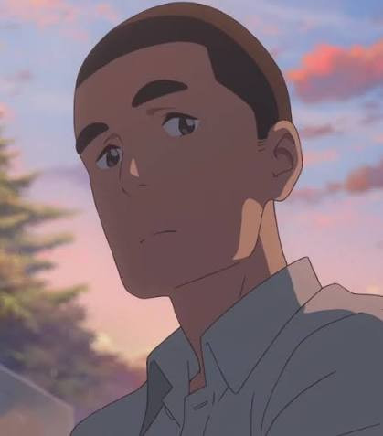
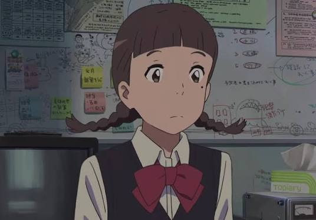

Your Name (Kimi no Nawa)

Your Name (Kimi no Na wa.) is a 2016 Japanese animated romantic fantasy film written and directed by Makoto Shinkai. The story follows two high school students, Taki Tachibana and Mitsuha Miyamizu, who mysteriously begin switching bodies even though they live in completely different places. As they try to understand what is happening to them, they gradually form a connection that involves love, memory, time, and fate. The film was produced by CoMix Wave Films and distributed by Toho, with music by RADWIMPS. It was released in Japan on August 26, 2016, and received widespread critical acclaim for its story, animation, music, and emotional storytelling.
Plot
Your Name follows two high school students, Taki Tachibana and Mitsuha Miyamizu, who mysteriously begin switching bodies despite living completely different lives. Taki lives in Tokyo while Mitsuha lives in the rural town of Itomori. As they experience each other's lives, they leave messages for each other and slowly develop a strong connection. Eventually, Taki discovers that their connection involves a much bigger mystery involving time, a comet, and a disaster that happened years earlier. As Taki searches for Mitsuha and tries to understand what happened, he discovers that their lives are connected in a way that goes beyond what he originally believed.
Characters
- Taki Tachibana is a high school student living in Tokyo. He is hardworking and spends his free time working at an Italian restaurant. He becomes connected to Mitsuha after they begin mysteriously switching bodies. Taki is also interested in architecture and drawing, and his determination becomes important when he begins searching for Mitsuha and trying to understand the mystery surrounding their connection.
- Mitsuha Miyamizu is a high school girl who lives in the rural town of Itomori. She becomes frustrated with her quiet hometown and wishes she could live as a boy in Tokyo. Her life changes when she begins switching bodies with Taki. Mitsuha also comes from a family with strong traditions connected to the Miyamizu Shrine, which becomes important to the events of the story.
- Miki Okudera is Taki's coworker at the restaurant. Taki has feelings for her at first, and she eventually realizes that his attention is focused on someone else. She is one of the people close to Taki during his life in Tokyo and becomes aware that something about him has changed.
- Katsuhiko Teshigawara is Mitsuha's friend. He is interested in machines and construction and helps Mitsuha when she needs assistance. He is also familiar with the problems surrounding Itomori and eventually helps with the plan to protect the town's residents.
- Sayaka Natori is Mitsuha's close friend. She becomes involved in Mitsuha's efforts to protect the people of Itomori. Sayaka is also part of the school's radio broadcasting club, which makes her useful when the group needs to spread an emergency evacuation message.
- Hitoha Miyamizu is Mitsuha's grandmother. She is knowledgeable about the Miyamizu family's traditions and explains ideas about time and the connections between people. Her knowledge of the shrine's traditions helps Taki understand that the strange events happening to him and Mitsuha may have a deeper meaning.






Cast
The Japanese voice cast includes Ryunosuke Kamiki as Taki Tachibana, Mone Kamishiraishi as Mitsuha Miyamizu, Ryo Narita as Katsuhiko Teshigawara, Aoi Yuki as Sayaka Natori, Nobunaga Shimazaki as Tsukasa Fujii, and Masami Nagasawa as Miki Okudera. The performances of the voice actors help give the characters their own personalities and make the emotional parts of the story more meaningful. The chemistry between Taki and Mitsuha is especially important because much of the film's story depends on their relationship developing even though they are separated by distance and time.
Director
Your Name was written and directed by Makoto Shinkai, who is known for his detailed animation and stories that often focus on relationships, distance, time, and human connection. His directing style can be seen in the film's detailed backgrounds, emotional scenes, and strong focus on the environments where the characters live. Shinkai also wrote the story himself, allowing the visual and emotional parts of the film to work closely together.
Genre
The film is mainly a romantic fantasy and animated film. It also contains elements of drama, science fiction, and supernatural storytelling. The romantic side of the movie focuses on the growing relationship between Taki and Mitsuha, while the fantasy and supernatural elements explain their mysterious body switching. The movie also uses science-fiction-like ideas involving time and the effects of the comet, making it more than just a simple romance story.
Themes
Some of the main themes are love, fate, memory, time, distance, family traditions, and human connection. The movie also explores how people can have an important connection with someone even when they are separated by distance or time. Another important idea is how memories can change or disappear while the feelings connected to those memories can remain. The film also shows the importance of family traditions and how they can connect the past with the present.
Animation
The animation was produced by CoMix Wave Films. The movie is known for its detailed backgrounds, colorful skies, city scenery, and realistic-looking environments. Masashi Ando served as animation director and Masayoshi Tanaka worked on the character designs. The detailed animation helps make both Tokyo and Itomori feel like important parts of the story. The changing skies, buildings, landscapes, and natural scenery also help create the emotional atmosphere of different scenes.
Music
The music and soundtrack were created by the Japanese rock band RADWIMPS. The songs are an important part of the movie and are used throughout major emotional and dramatic scenes. The soundtrack helps establish the mood of different moments, from the lighter parts of Taki and Mitsuha's daily lives to the more serious scenes involving their relationship and the disaster. The combination of the animation and RADWIMPS' music became one of the most recognizable parts of the film.
Release
Your Name premiered at Anime Expo in Los Angeles on July 3, 2016, before being released theatrically in Japan on August 26, 2016. It was later released internationally in 2017. The movie has a runtime of about 107 minutes. Its international release allowed the film to reach audiences outside Japan and helped make it one of the most widely recognized Japanese animated films around the world.
Reviews
Your Name received widespread critical acclaim for its story, animation, music, visuals, and emotional storytelling. On Rotten Tomatoes, it currently has a 98% Tomatometer score from critics and a 95% audience score. IMDb lists the film at 8.4/10 based on hundreds of thousands of user ratings. Critics and audiences have particularly praised the movie for combining its fantasy story with emotional character relationships, detailed animation, and a memorable soundtrack.
Box Office
The film was a major commercial success. It earned approximately US$408.3 million worldwide and became one of the most successful Japanese films ever released. It held the record for the highest-grossing Japanese film until Demon Slayer: Mugen Train surpassed it in 2020. Its strong performance in both Japan and international markets showed how widely the film was able to connect with audiences.
Awards
Your Name received several awards, including Best Animated Feature from the Los Angeles Film Critics Association Awards, the Sitges Film Festival, and the Mainichi Film Awards. It was also nominated for the Japan Academy Film Prize for Animation of the Year. These awards and nominations recognized different parts of the film, including its animation, storytelling, and overall production.
Production
The film was produced by CoMix Wave Films and distributed by Toho. Makoto Shinkai wrote the screenplay and directed the movie, while RADWIMPS created its music. The production brought together the director, animators, character designers, musicians, and other staff to create the film's distinctive visual and emotional style. The combination of detailed animation and music became an important part of the movie's identity.
Adaptations
A light novel version of Your Name, also written by Makoto Shinkai, was released before the movie. A Hollywood live-action adaptation has also been announced as a project involving Paramount Pictures and Bad Robot. The light novel gives another way for audiences to experience the story, while the planned live-action adaptation would present the story in a different format.
Legacy
Your Name became one of the most internationally recognized Japanese animated films. Its success helped introduce Makoto Shinkai's work to a much larger international audience, while its animation, music, and story became major parts of its lasting popularity. The film also became an important example of how Japanese animated movies could reach audiences around the world while still keeping elements of Japanese culture, traditions, and settings.
Personal Movie Review
There are movies that I enjoy, movies that I remember, and then there are movies that completely stay with me. Your Name is definitely the last one for me. It was the first movie that ever made me bawl my eyes out. I remember finishing it and just sitting there for a while because I genuinely did not know what to do with all the emotions I was feeling. Everything about it felt so beautiful and overwhelming at the same time. For me, Your Name is the absolute definition of ethereal, and it easily deserves the spot of my number one movie.
What I love most about this movie is how it makes something impossible feel so real. The story of Taki and Mitsuha switching bodies sounds strange when you first hear about it, but somehow the movie makes their connection feel incredibly human. They start out confused and almost annoyed with each other, yet little by little, they become important parts of one another's lives. I loved watching their relationship grow even when they were not always together. There was something so special about how they could feel connected without fully understanding why.
The visuals were also something I could not get over. Every scene looked like it belonged in a dream. The sky, the mountains, the city lights, the shrine, the comet, even the smallest details in the background were all so pretty. I could pause the movie at almost any point and probably use the scene as my wallpaper. The way the colors and lighting changed with the mood made everything feel even more emotional. It was like watching a memory that never actually happened to me, but somehow felt familiar.
Then there is the soundtrack, which honestly made everything hit ten times harder. There are moments in the movie where the music almost seems to speak for the characters because they cannot explain what they are feeling themselves. Whenever the songs started playing, I already knew my emotions were about to get destroyed. The music and animation fit together so perfectly that some scenes became impossible for me to watch without getting emotional.
What really broke me, though, was the part where Taki realizes that the person he has been searching for is separated from him by time itself. That realization made the whole story feel so much bigger. It was not just about two people falling in love. It became a story about memory, distance, fate, and the fear of losing someone before you even get the chance to truly know them. The fact that they kept trying to find each other even after everything became confusing made their connection feel almost unreal.
I think that is why Your Name affected me as much as it did. It made me think about the strange people we meet in life and how some connections can feel important even when we cannot explain them. There is something almost magical about forgetting someone's name but still remembering the feeling they left behind. That idea stayed in my head long after the movie ended.
I also love how the movie can be beautiful and heartbreaking without feeling empty. It made me cry, but it was the kind of crying that felt meaningful. By the end, I was not only crying because of what happened. I was crying because I cared so much about these characters and genuinely wanted them to find each other.
Your Name is one of those movies that makes me wish I could watch it again for the first time. I already know the story, the twists, the emotional moments, and the ending, but there is still a part of me that wants to go back to that first viewing and experience all of it again. It gave me a feeling that is difficult to put into words. Maybe that is exactly what makes it so special to me.
For me, Your Name is more than just a great movie. It is a movie that made me feel something I had never felt from a film before. It is beautiful, painful, magical, and strangely comforting all at once. Maybe that sounds dramatic, but I genuinely believe it deserves my number one spot. Some movies you watch and move on from. Your Name is one I know I will carry with me.
Basic Information
- Title: Your Name / Kimi no Na wa.
- Japanese title: 君の名は。
- Director: Makoto Shinkai
- Writer: Makoto Shinkai
- Studio: CoMix Wave Films
- Distributor: Toho
- Country: Japan
- Language: Japanese
- Release year: 2016
- Runtime: 107 minutes
- Genre: Animated, romantic fantasy
- Music: RADWIMPS
Sources...
-
- Wikipedia — Your Name
-
- CoMix Wave Films — Your Name
-
- Makoto Shinkai Works — Official Site
-
- RADWIMPS Official Site
-
- Rotten Tomatoes — Your Name
-
- Japanese Film Database (JFDB)
-
- Paramount Pictures